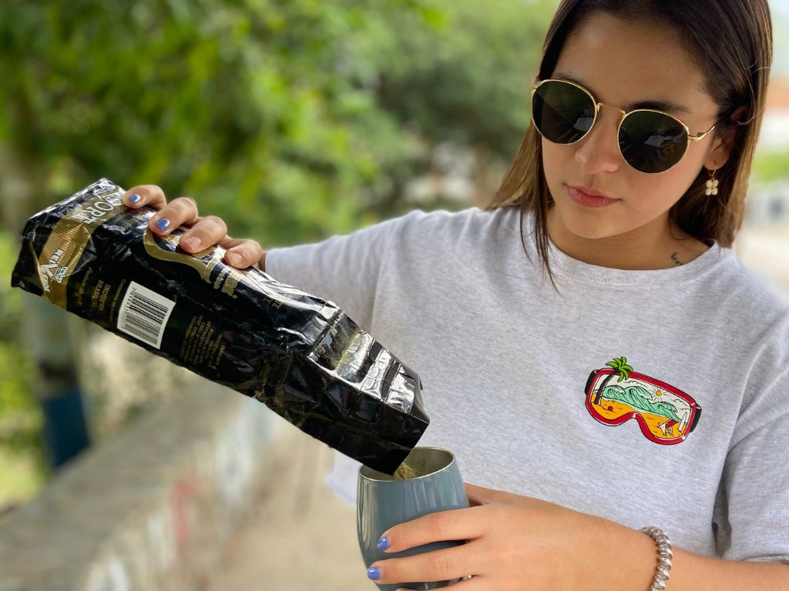

Artículo
La auténtica Yerba Mate Argentina y Uruguaya ahora está en Colombia. En Seed On te asesoramos y llevamos hasta tu casa tu Kit de Mate ideal.
Aquí te contamos lo que necesitas para tener una excelente mateada
Es una infusión llena de antioxidantes y beneficios para la salud que, al tomarla, te ayudará a obtener más energía, mayor concentración y mejorar bienestar.
Es un recipiente especial en el cual se prepara la infusión de Yerba Mate, generalmente está hecho de calabaza, madera, cerámica o metal. La elección del material de tu mate hará que tu experiencia sea diferente, por eso, asegurate de tener una buena asesoría antes de elejirlo.
Es un utensilio fundamental para vivir una buena experiencia con el mate, ya que su forma de tubo con pequeños agujeros en la parte inferior, te permitirá filtrar la infusión evitando que las hojas de la yerba pasen a tu boca.
El mate, más que una bebida, es una tradición que ha perdurado a lo largo de los años, cultivando lazos y creando momentos únicos entre amigos, familia y compañeros. Originario de Argentina, Uruguay y Brasil, el mate es una fusión de sabores intensos y beneficios para tu bienestar.
¿Por qué tomar mate?Recarga tu cuerpo de manera natural con cada sorbo de mate.
Estimula las neuronas y favorece la actividad cerebral, la memoria y el razonamiento.
Influye positivamente en el proceso estomacal y digestivo al estimular la producción de bilis y ácidos gástricos, al tiempo que mejora el movimiento intestinal.
Metaboliza más efectivamente los carbohidratos y previene la acumulación de ácido láctico en el cuerpo, lo que representa aumento de la resistencia física, menos agotamiento

Eleva tu energía y disfruta de los beneficios del Mate ahora mismo
¡Haz clic para comprar!No te preocupes si es tu primera vez, preparar un mate es muy fácil y lo haremos juntos. Descubre aquí cómo preparar y disfrutar el auténtico mate, respetando la tradición y su increíble sabor.
Ver video ahoraConoce la gran variedad de productos que tenemos para ti
¡Tu elijes cómo combinar la Yerba, el Mate y la Bombilla!
¡Compra tu kit ahora!Estamos aquí para proporcionarte toda la información que necesitas sobre la yerba mate en Colombia. Hemos recopilado una lista de las preguntas más comunes que nuestros visitantes suelen tener. Si tienes alguna inquietud o pregunta adicional, ¡no dudes en contactarnos!
Si ya sabes que productos quieres o si necesitas asesoría para elegir tus productos, puedes escribirnos a nuestro Whatsapp dando clic aquí para hablar con uno de nuestros asesores y que estos tomen tu pedido, tus datos y finalmente realicen el envío tu compra.
Para realizar el pago de tu compra puedes hacerlo a través de transferencias a Bancolombia, Nequi o Daviplata. Puedes pagar con tarjeta de crédito o débito y si estás en Medellín o el Valle de Aburrá puedes pagar contra entrega.
Sí, realizamos envíos para todo el país a través de la empresa logística Inter Rapidísimo y en Medellín contamos con mensajero propio.
Estamos ubicados en la ciudad de Medellín pero operamos hace 4 años de manera 100% virtual.
Sí, puedes encontrar nuestro catálogo de productos dando clic aquí
Personas como tú han probado nuestro mate y están encantadas. Sus testimonios reflejan la satisfacción y el deleite de descubrir el auténtico sabor del mate con nosotros.
Aquí descubrirás desde consejos para disfrutar la Yerba Mate de la forma más auténtica hasta recetas creativas que te harán saborear nuevas perspectivas.